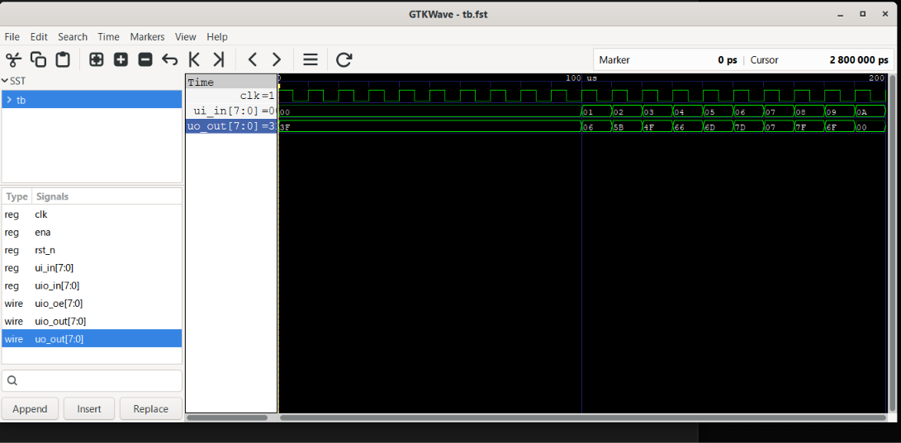
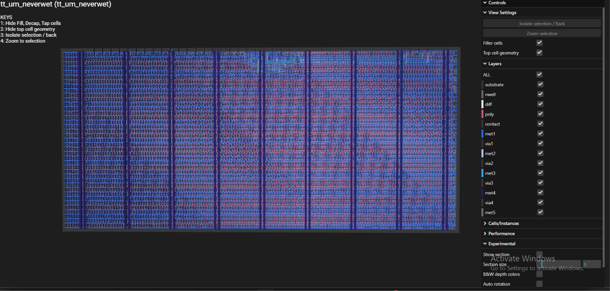

A 7-segment display is that classic retro LED screen on microwaves, clocks, and calculators—seven little bars in a figure-8 (a through g) doing the absolute most to show digits. My chip is a 7-segment decoder, basically a translator turning raw binary into light-up segments.
ui_in[3:0]): Feeding a 4-bit binary number (0 to 9) down four wires.uo_out[6:0]): Lighting up the exact combo of seven LED bars for each digit. 0 hits the six outer bars and leaves the middle off, 1 only lights the two right-hand bars, 8 goes FULL POWER with all seven on, and anything 10 or above nukes all bars off.Looking at GTKWave like it's live CCTV footage of my chip behaving: clk is just the clock signal ticking along doing its job, ui_in counts up (00 through 09, then 0A for 10), and uo_out spits out the segment hex patterns (3F for 0, 06 for 1, all the way to 7F for 8, then flatlining to 00 once ui_in hits 10).

tt_um_never-wet and Verilog IMMEDIATELY crashed out because - means subtraction, not a hyphen 🙄 Switched to tt_um_neverwet and boom, syntax error yeeted.g f e d c b a): Messed up bit order and bit widths early on—accidentally gave 6 an 8-bit width or wrote 7 backwards like a clown—until I locked every single pattern to g f e d c b a.test/test.py): Nuked the template's default 20 + 30 = 50 assertion, stepped through 0–10 with await ClockCycles(dut.clk, 1) between values, and caught a cursed typo where 10 expected 0b0000111 instead of 0b0000000.docs & gds): Both workflows exploded at first 💀 Fixed them by filling out the pinout: block in info.yaml, keeping the exact ## How it works and ## How to test headings in docs/info.md, and flipping GitHub Pages to build from GitHub Actions under Settings > Pages.make and Git (for tr), added cocotb-config to PATH, and ran make -B PWD=. because $(PWD) comes up completely empty in Windows cmd.